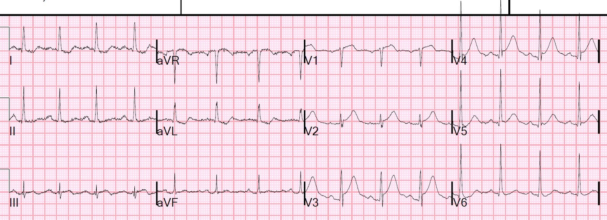
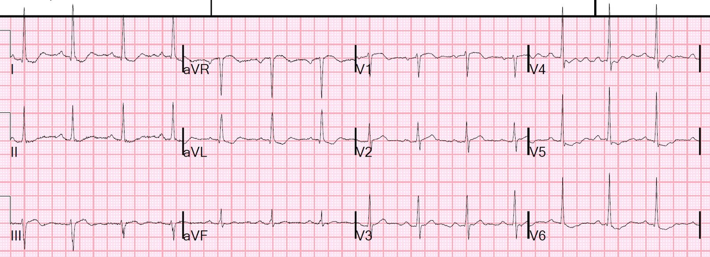
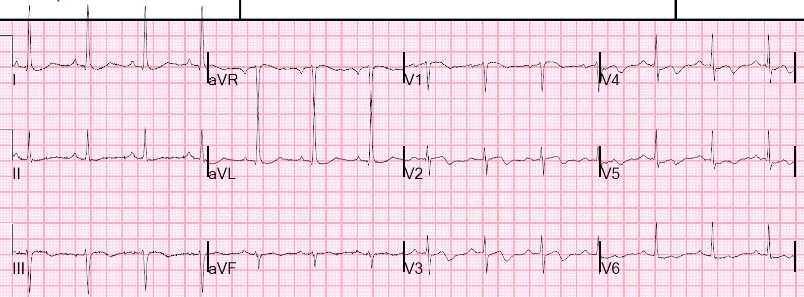
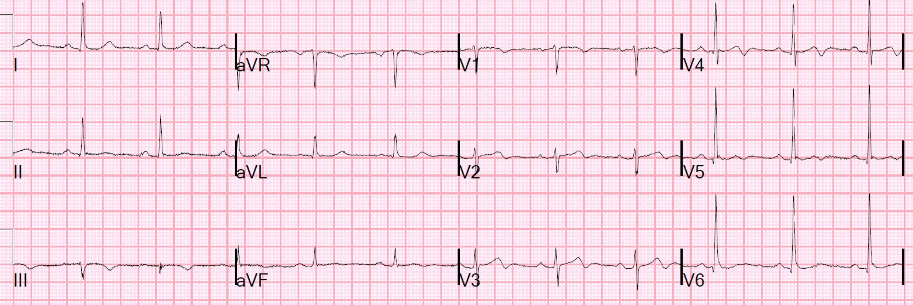
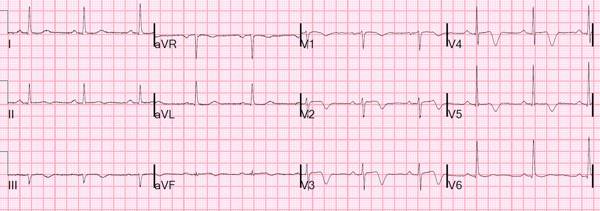
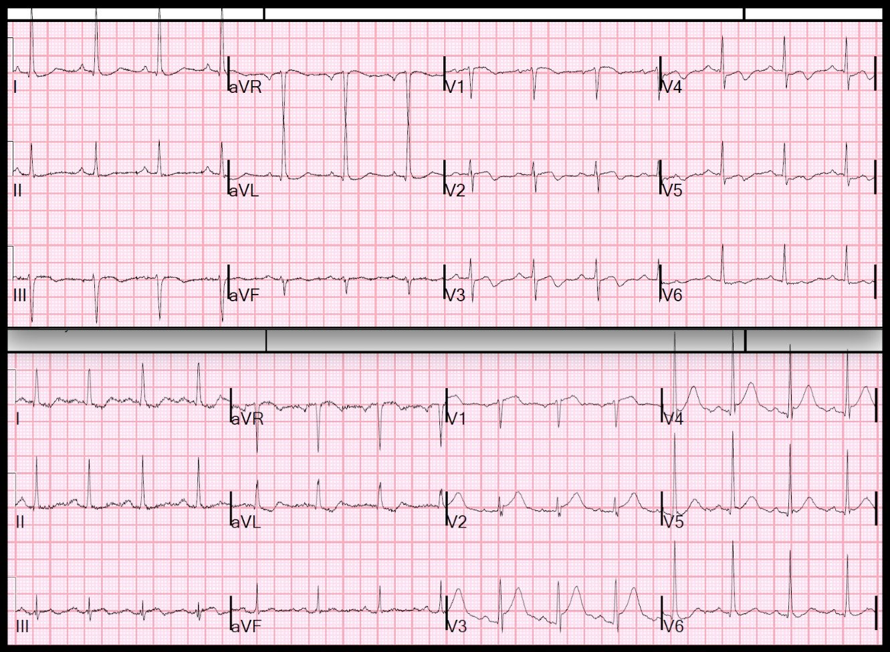

28/06/2018 — Nếu bạn ghi điện tâm đồ trong lúc đau ngực, nó sẽ cho thấy gì?
Bản dịch tiếng Việt của bài "If you had recorded an ECG during chest pain, what would it have shown?" – Dr. Smith’s ECG Blog. Giữ nguyên toàn bộ 9 hình ảnh của bản gốc.
Ca bệnh
Một bệnh nhân nam 40 mấy tuổi đến khu phân loại (triage). Anh ấy đã trải qua vài cơn đau ngực điển hình trong 24 giờ qua. Điện tâm đồ này (điện tâm đồ #3) được ghi ngay sau khi cơn đau cuối cùng tự hết. Cơn đau đã kéo dài khoảng một giờ.

Đây là sóng T đảo ngược “phần cuối” (terminal T-wave inversion): phần sau của sóng T quay xuống (đảo ngược).
Sóng R được bảo tồn ở các chuyển đạo liên quan (điều kiện cần để được gọi là sóng Wellens)
Không có LVH ở các chuyển đạo liên quan. Điều này quan trọng, vì LVH có thể gây ra sóng giả Wellens (PseudoWellens).
Hình ảnh Wellens với sóng T đảo ngược phần cuối này (khác với sóng T đảo ngược sâu, đối xứng) được chính Wellens gọi là “Kiểu A” (Pattern A) trong các bài báo gốc.
Các bài báo gốc của Wellens:
de Zwaan C, Bär FW, Wellens HJ. Characteristic electrocardiographic pattern indicating a critical stenosis high in left anterior descending coronary artery in patients admitted because of impending myocardial infarction (Hình ảnh điện tâm đồ đặc trưng chỉ điểm hẹp khít đoạn cao động mạch liên thất trước ở bệnh nhân nhập viện vì dọa nhồi máu cơ tim). Am Heart J. 1982 tháng Tư;103(4 Pt 2):730-6.
de Zwaan C và cs. Angiographic and clinical characteristics of patients with unstable angina showing and ECG pattern indicating critical narrowing of the proximal LAD coronary artery (Đặc điểm chụp mạch và lâm sàng của bệnh nhân đau thắt ngực không ổn định có hình ảnh điện tâm đồ chỉ điểm hẹp khít đoạn gần động mạch vành LAD). Am Ht J 117(3): 657-665; tháng Ba 1989.
(Một số tác giả về sau đã bỏ qua cách phân loại “Kiểu A” của chính Wellens và gọi đây là “Típ” B!! — hãy quay về cách phân loại của chính Wellens)
Đây là một ví dụ về việc phân loại sai: https://www.resus.com.au/2017/03/24/wellens-syndrome/
Đây là hội chứng Wellens (Wellens’ syndrome): Vì bệnh nhân đã có đau ngực kiểu đau thắt ngực nay đã hết, ca này đáp ứng tiêu chuẩn của hội chứng Wellens (tiêu chuẩn: đau ngực kiểu đau thắt ngực đã hết, sóng Wellens điển hình ở vùng chi phối của LAD với sóng R được bảo tồn, không có LVH — vốn có thể gây ra sóng giả Wellens).
Xem các bài sau về những hình ảnh giả Wellens:
Pseudo-Wellens’ Syndrome due to Left Ventricular Hypertrophy (LVH) (Hội chứng giả Wellens do phì đại thất trái)
Anterior STEMI? (STEMI thành trước?)
Is it Wellens’ Syndrome? (Có phải hội chứng Wellens không?)
Wellens’ waves are NOT equivalent to Wellens’ syndrome: Pseudo-Wellens’ due to LVH and HTN (Sóng Wellens KHÔNG đồng nghĩa với hội chứng Wellens: giả Wellens do LVH và tăng huyết áp)
Ca bệnh tiếp diễn
Khác với nhiều ca hội chứng Wellens, bệnh nhân này thực sự đến viện khi đang đau. Vì vậy bạn sẽ được thấy điện tâm đồ lẽ ra sẽ cho thấy gì nếu bạn ghi nó trong lúc đau!
Đây là điện tâm đồ đầu tiên (điện tâm đồ #1) được ghi trong lúc đau:


Điều này rất đáng nghi tắc LAD cấp.
Nó thậm chí còn đáp ứng tiêu chuẩn STEMI: ST chênh lên 2.5 mm ở V3, ST chênh lên 2 mm ở V4 (tại điểm J, so với điểm nối PQ)
Nếu bạn tính công thức 3 biến và 4 biến, bạn có thể dùng các số liệu sau:
STE60V3 (ST chênh lên tại thời điểm 60 ms sau điểm J ở chuyển đạo V3) = 3.5
QTc (do máy tính đo) = 418
QRSV2 (tổng biên độ QRS ở V2) = 5
RAV4 (biên độ sóng R ở V4) = 24
Xem ứng dụng subtleSTEMI trên iPhone để có các công thức:
https://itunes.apple.com/ch/app/subtlestemi/id617146818?l=en&mt=8 (ứng dụng subtleSTEMI trên App Store)
Công thức 3 biến = 21.024 (giá trị này thấp vì biên độ sóng R ở V4 rất cao)
Công thức 4 biến = 18.266 (Hiện nay chúng ta biết đây là công thức chính xác hơn, và giá trị trên 18.2 rất đặc hiệu cho tắc LAD.)
Đây là công thức 4 biến thực tế:
0.052 × QTc-B – 0.151 × QRSV2 – 0.268 × RV4 + 1.062 × STE60V3.
Ngay hôm nay, một nghiên cứu thẩm định ngoài các công thức 3 biến và 4 biến nhằm phân biệt tắc LAD kín đáo với ST chênh lên biến thể bình thường vừa được công bố trực tuyến trên tạp chí Annals of Noninvasive Electrocardiology: https://onlinelibrary.wiley.com/doi/full/10.1111/anec.12568
Đây là nghiên cứu thẩm định cho 2 bài báo sau của Smith:
https://www.annemergmed.com/article/S0196-0644(12)00160-6/pdf (bài báo của Smith trên tạp chí Annals of Emergency Medicine)
https://www.jecgonline.com/article/S0022-0736(17)30107-3/abstract (bài báo của Smith trên tạp chí Journal of Electrocardiology)
Nghiên cứu thẩm định này xác nhận rằng công thức 4 biến rất chính xác và tốt hơn công thức 3 biến!
Ca bệnh tiếp diễn
Cơn đau của bệnh nhân hết và một điện tâm đồ khác (điện tâm đồ #2) được ghi 18 phút sau điện tâm đồ đầu tiên:


Sau đó điện tâm đồ này (lại là điện tâm đồ #3) được ghi thêm 17 phút sau, khi bệnh nhân đã hoàn toàn hết đau (đây là điện tâm đồ Wellens mà bạn đã thấy ở đầu bài):


Phòng thông tim được kích hoạt và phát hiện một tổn thương LAD hẹp 95%, mờ (hazy), có huyết khối, với dòng chảy TIMI 3 (dòng chảy tốt), và tổn thương này đã được đặt stent.
Đây là điện tâm đồ đầu tiên sau thông tim (điện tâm đồ #4).


Điện tâm đồ này được ghi vào sáng hôm sau (điện tâm đồ #5):


Giờ đây chúng sâu hơn và gần như đối xứng.
Đây là sóng T “Kiểu B” (Pattern B).
Điều Wellens không mô tả, nhưng tôi đã thấy là đúng, là sóng Wellens Kiểu A được thấy sớm sau tái tưới máu, và chúng luôn luôn tiến triển thành sóng Kiểu B.
Wellens không có nhiều điện tâm đồ liên tiếp để xem xét kỹ. Ông ấy đã không thể nhận ra điều này.
Tôi đã thấy điều này đúng trong mọi trường hợp.
Bằng chứng cho thấy Wellens là một hội chứng tái tưới máu
Theo hiểu biết của tôi, chưa có bài báo nghiên cứu nào chứng minh điều này. Từ kinh nghiệm của mình, tôi tin chắc rằng nếu được nghiên cứu một cách chính thức, điều này sẽ được xác nhận.
Tôi tin rằng mình là người đầu tiên trình bày Wellens như một hội chứng tái tưới máu, trong cuốn sách của tôi, The ECG in Acute MI, trang 22-23 và 51, và trong chương 27 về Tái tưới máu và Tắc lại.
Việc tôi nhận ra điều này dựa trên các bài báo của Wehrens và Doevendans về sóng T đảo ngược phần cuối như một dấu hiệu tái tưới máu sau khi dùng thuốc tiêu sợi huyết. Hãy để ý rằng cả hai bài báo đều có Wellens là tác giả chính (senior author), và thật đáng ngạc nhiên là ông ấy đã không liên hệ giữa hội chứng của chính mình với hình ảnh điện tâm đồ giống hệt mà ông mô tả trong các nghiên cứu này!
Wehrens XH, Doevendans PA, Ophuis TJ, Wellens HJ. A comparison of electrocardiographic changes during reperfusion of acute myocardial infarction by thrombolysis or percutaneous transluminal coronary angioplasty (So sánh các thay đổi điện tâm đồ trong quá trình tái tưới máu nhồi máu cơ tim cấp bằng tiêu sợi huyết hoặc nong mạch vành qua da). Am Heart J. 2000 tháng Ba;139(3):430-6. PubMed PMID: 10689257.
Doevendans PA, Gorgels AP, van der Zee R, Partouns J, Bär FW, Wellens HJ. Electrocardiographic diagnosis of reperfusion during thrombolytic therapy in acute myocardial infarction (Chẩn đoán tái tưới máu bằng điện tâm đồ trong quá trình điều trị tiêu sợi huyết ở nhồi máu cơ tim cấp). Am J Cardiol. 1995 ngày 15 tháng Sáu;75(17):1206-10. PubMed PMID: 7778540.
Thêm về kết cục
Troponin I đỉnh là 0.58 ng/mL
Siêu âm tim ngày hôm sau cho thấy:
Rối loạn vận động thành khu trú – vách đoạn xa, thành trước và mỏm, diện rộng.
Rối loạn vận động thành khu trú – thành trước, có khả năng.
Ed Burns có một bản tóm tắt đầy đủ và rất hay về hội chứng Wellens tại đây:
https://lifeinthefastlane.com/ecg-library/wellens-syndrome/ (Hội chứng Wellens – thư viện điện tâm đồ Life in the Fast Lane)

==================================
Bình luận của KEN GRAUER, MD (28/6/2018):
==================================
Một bài viết rất sâu sắc với phần giải thích xuất sắc của Dr. Smith, minh họa qua diễn tiến tuần tự trên 5 bản ghi liên tiếp thế nào là hội chứng Wellens , và thế nào thì không phải. Tôi thấy việc so sánh điện tâm đồ đầu tiên trong bài này (bản ghi TRÊN trong Hình 1 — ghi ngay sau khi cơn đau ngực cuối cùng đã tự hết) — với điện tâm đồ ban đầu được ghi trong lúc đau ngực (DƯỚI) là đặc biệt thú vị.
CÂU HỎI:
- Có khác biệt về trục mặt phẳng trán giữa 2 bản ghi không?
- Có khác biệt về biên độ QRS ở các chuyển đạo giữa 2 bản ghi không?
- Có đủ điện thế của LVH ở một trong hai (hoặc cả hai) bản ghi không?
- Điều gì có thể giải thích những khác biệt này? Tại sao chúng ta nên quan tâm?


TRẢ LỜI:
- Trục mặt phẳng trán rõ ràng đã dịch chuyển. Ở bản ghi TRÊN — trục khoảng -15 độ (lưu ý phức bộ chủ yếu âm ở aVF). Ở bản ghi DƯỚI — trục khoảng +40 độ (dương rõ ở aVF).
- Tiêu chuẩn điện thế của LVH được thỏa mãn ở bản ghi TRÊN tại chuyển đạo aVL (tức là sóng R ở aVL ≥12mm). Tuy nhiên, tiêu chuẩn này không còn được thỏa mãn ở các chuyển đạo chi trong bản ghi DƯỚI, khi trục mặt phẳng trán không còn âm nữa. LƯU Ý: Theo Dr. Smith — chẩn đoán hội chứng Wellens không bị cản trở ở điện tâm đồ TRÊN, vì tiêu chuẩn LVH rõ ràng không có ở các chuyển đạo ngực, nơi ghi nhận các thay đổi ST-T của Wellens!
- Vùng chuyển tiếp ở các chuyển đạo ngực cũng đã dịch chuyển. Sóng R chỉ trở nên chủ yếu dương ở khoảng giữa V3 và V4 trong bản ghi TRÊN — trong khi vùng chuyển tiếp xảy ra sớm hơn (tức là ngay từ chuyển đạo V2) ở bản ghi DƯỚI. Cùng với thay đổi vùng chuyển tiếp này — biên độ QRS tăng rõ rệt ở bản ghi DƯỚI. Thực tế, tiêu chuẩn điện thế của LVH được thỏa mãn ở chuyển đạo V6 (tức là R≥18mm ở chuyển đạo này).
Bình luận: Tầm quan trọng của việc chú ý đến trục mặt phẳng trán, vùng chuyển tiếp và biên độ QRS tương đối ở các chuyển đạo thường bị bỏ qua khi so sánh các bản ghi liên tiếp. Trong ca cụ thể này — những kết luận sắc sảo mà Dr. Smith nêu bật (tức là hội chứng Wellens ở bản ghi TRÊN sau khi đau ngực hết; ST chênh lên cấp ở bản ghi DƯỚI trong lúc đau ngực) không bị thay đổi — nhưng có những lúc việc xác định có hay không có thay đổi ST-T cấp giữa các bản ghi liên tiếp có thể đặc biệt khó khăn NẾU không nhận ra những khác biệt về trục, vùng chuyển tiếp và biên độ QRS.
- Bảo đảm đặt điện cực chuyển đạo ngực nhất quán là điều thiết yếu để so sánh các dấu hiệu ở V1 đến V6 qua các bản ghi liên tiếp. Thể trạng to lớn, bất thường thành ngực, vị trí đặt điện cực khác nhau (trên so với dưới vú) ở phụ nữ, là một vài trong số các lý do khiến có thể thấy khác biệt về vùng chuyển tiếp và biên độ QRS ở chuyển đạo ngực qua các bản ghi liên tiếp nếu không chú ý đặt điện cực một cách nhất quán. Cũng liên quan trong ca này, như một nguyên nhân tiềm năng gây thay đổi vùng chuyển tiếp và biên độ QRS ở chuyển đạo ngực, là tình trạng tắc LAD từng lúc kèm tái tưới máu tự phát.
- Một điều thường không được nhận ra là thay đổi độ nghiêng của giường bệnh nhân có thể giải thích cho sự dịch chuyển trục QRS. Bao nhiêu lần điện tâm đồ được ghi ở bệnh nhân cấp cứu vốn khó nằm trên giường hoàn toàn phẳng? Đã bao giờ bạn thấy góc nghiêng (tính bằng độ) của giường bệnh nhân được ghi chú trên điện tâm đồ khi ghi điện tim cho những bệnh nhân không nằm hoàn toàn phẳng chưa? Tôi luôn nghi ngờ rằng thay đổi góc nghiêng của giường qua các bản ghi liên tiếp là một trong những nguyên nhân thường gặp gây ra sóng Q ở các chuyển đạo thành dưới mà đôi khi thấy hôm nay rồi hôm sau lại mất …